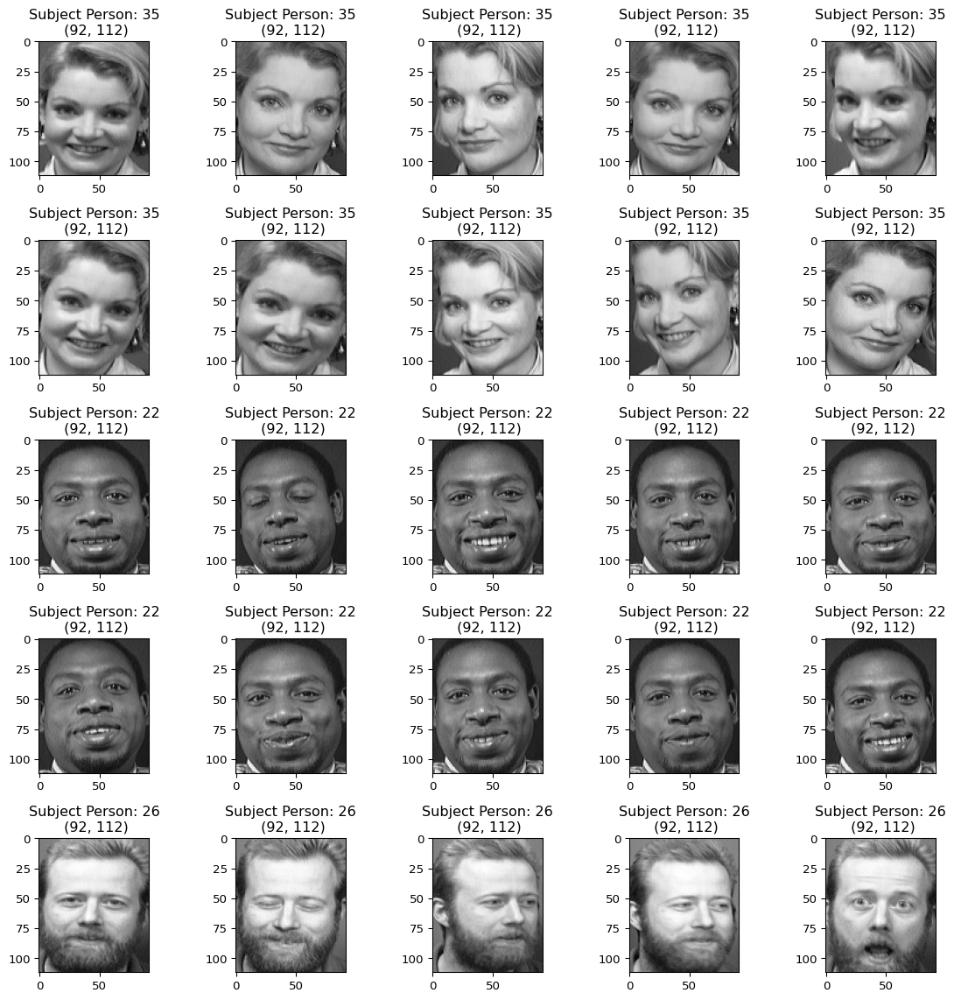

Face Recognition using Convolutional Neural Networks
deep learning
computer vision
CNN
Building a CNN model for facial recognition using the ORL database.
Author
Chaance Graves
Published
November 21, 2023
Project Description
Facial recognition technology has numerous applications in security, authentication, and personalization systems. This project implements a Convolutional Neural Network (CNN) to accurately identify individuals from facial images using the ORL database of faces.
Import the relevant packages and necessary dependencies
# Python built-in librariesfrom pathlib import Path# Data pre-processing and visualizationimport cv2import numpy as npimport matplotlib.pyplot as plt# Sci-kit learn functionsfrom sklearn.model_selection import train_test_splitfrom sklearn.metrics import accuracy_score# For model training and compilationfrom keras import layersfrom keras.utils import to_categoricalfrom keras.models import Sequentialfrom keras.callbacks import EarlyStopping# suppress warnings output messagesimport warningswarnings.filterwarnings('ignore')
2025-04-24 08:40:04.323420: I tensorflow/core/util/port.cc:153] oneDNN custom operations are on. You may see slightly different numerical results due to floating-point round-off errors from different computation orders. To turn them off, set the environment variable `TF_ENABLE_ONEDNN_OPTS=0`.
2025-04-24 08:40:04.325411: I external/local_xla/xla/tsl/cuda/cudart_stub.cc:32] Could not find cuda drivers on your machine, GPU will not be used.
2025-04-24 08:40:04.329396: I external/local_xla/xla/tsl/cuda/cudart_stub.cc:32] Could not find cuda drivers on your machine, GPU will not be used.
2025-04-24 08:40:04.338178: E external/local_xla/xla/stream_executor/cuda/cuda_fft.cc:467] Unable to register cuFFT factory: Attempting to register factory for plugin cuFFT when one has already been registered
WARNING: All log messages before absl::InitializeLog() is called are written to STDERR
E0000 00:00:1745502004.352729 13156 cuda_dnn.cc:8579] Unable to register cuDNN factory: Attempting to register factory for plugin cuDNN when one has already been registered
E0000 00:00:1745502004.357495 13156 cuda_blas.cc:1407] Unable to register cuBLAS factory: Attempting to register factory for plugin cuBLAS when one has already been registered
W0000 00:00:1745502004.377104 13156 computation_placer.cc:177] computation placer already registered. Please check linkage and avoid linking the same target more than once.
W0000 00:00:1745502004.377134 13156 computation_placer.cc:177] computation placer already registered. Please check linkage and avoid linking the same target more than once.
W0000 00:00:1745502004.377136 13156 computation_placer.cc:177] computation placer already registered. Please check linkage and avoid linking the same target more than once.
W0000 00:00:1745502004.377137 13156 computation_placer.cc:177] computation placer already registered. Please check linkage and avoid linking the same target more than once.
2025-04-24 08:40:04.384672: I tensorflow/core/platform/cpu_feature_guard.cc:210] This TensorFlow binary is optimized to use available CPU instructions in performance-critical operations.
To enable the following instructions: AVX2 AVX_VNNI FMA, in other operations, rebuild TensorFlow with the appropriate compiler flags.
# Create empty arrays to store the training and test images and labels:images = []labels = []
# Iterate over the subdirectories of the dataset (representing different classes or labels)for person_dir in image_dir.iterdir():if person_dir.is_dir(): label =int(person_dir.name[1:])for image_file in person_dir.iterdir(): image = cv2.imread(str(image_file)) grayscale_image = cv2.cvtColor(image, cv2.COLOR_BGR2GRAY) numpy_image = np.array(grayscale_image)# Append images and labels directly to the trainX and trainY lists images.append(numpy_image) labels.append(label)
# Convert the image data and labels into NumPy arraysimages = np.array(images)images = images.astype("float32") /255# Normalize the imageslabels = np.array(labels)
print(f'normalized image data: {images[:]}')print('\n')# Check the shapes after modificationsprint(f"numpy images shape: {images.shape}")print(f"labels: {labels.shape}")
Let’s visualize the Images and Train and Test Dataset
# Define the number of images you want to plotnum_images_to_plot =25# Change this number as needed# Reshape the images to (112, 92)# Assuming x_train has shape (num_samples, 112, 92)reshaped_images = images[:num_images_to_plot].reshape(-1, 112, 92)# Plot the imagesplt.figure(figsize=(12, 12))for i inrange(num_images_to_plot): plt.subplot(5, 5, i +1) # Change the subplot layout as per your preference plt.imshow(reshaped_images[i], cmap='gray')# Set the title as per the corresponding label plt.title(f'Subject Person: {labels[i]}\n ({reshaped_images[i].shape[1]}, {reshaped_images[i].shape[0]})')#plt.axis('off') # Hide axesplt.tight_layout()plt.show()

Split the Data into Train, Test and Validation Sets
X_data = images # store images in X_dataY_data = labels.reshape(-1,1) # store labels in Y_data# Find unique classes in the labelsunique_labels = np.unique(Y_data)unique_labels
# Reindex the labels to start from 0label_mapping = {label: index for index, label inenumerate(unique_labels)}Y_data_reindexed = np.array([label_mapping[label[0]] for label in Y_data])# Verify the unique values in the reindexed labelsprint(np.unique(Y_data_reindexed))
Initially, you’ve split the data into x_train (training data) and x_test (test data).
Create Validation Set:
To generate a validation set from the existing training data (x_train), you can perform another split. This split will create a subset designated for validation purposes.
# take a random sample: 80% of the data for the test set# The resulting variables will represent:# x_train: Training data# y_train: Corresponding training labels# x_test: Test data# y_test: Corresponding test labelsx_train, x_test, y_train, y_test = train_test_split(X_data, Y_data_reindexed, test_size=0.2, random_state=42)print(f'x_train: {x_train.shape}')print(f'x_test: {x_test.shape}')print(f'y_train: {y_train.shape}')print(f'y_test: {y_test.shape}')
# Split the training data further into x_train, x_val, y_train, y_val# The resulting variables will represent:# x_val: Validation data# y_val: Corresponding validation labelsx_train, x_val, y_train, y_val = train_test_split(x_train, y_train, test_size=0.05, random_state=42)print(f'x_train: {x_train.shape}')print(f'x_val: {x_val.shape}')print(f'y_train: {y_train.shape}')print(f'y_val: {y_val.shape}')
# Convert labels to categorical formatnum_classes =len(np.unique(Y_data_reindexed))# Convert integer labels to one-hot encoded labelsy_train_categorical = to_categorical(y_train, num_classes)y_test_categorical = to_categorical(y_test, num_classes)y_val_categorical = to_categorical(y_val, num_classes)print(f'The number of the classes: {num_classes}')print(f'y_train categorical shape: {y_train_categorical.shape}')print(f'y_test categorical shape: {y_test_categorical.shape}')print(f'y_val categorical shape: {y_val_categorical.shape}')
The number of the classes: 40
y_train categorical shape: (304, 40)
y_test categorical shape: (80, 40)
y_val categorical shape: (16, 40)
Build the CNN Model
Convolotional layer
pooling layer
fully connected layer
Let’s build a new architecture of CNN by changing the number and position of layers.
# Adding the hidden layers and the output layer to our modelcnn_model = Sequential([layers.Conv2D(32, (3, 3), activation='relu', input_shape= input_shape),layers.BatchNormalization(),layers.MaxPooling2D((2, 2)),#layers.BatchNormalization(),layers.Conv2D(64, (3, 3), activation='relu', input_shape= input_shape), # Additional Conv2D layer#layers.BatchNormalization(),layers.MaxPooling2D((2, 2)),# Fully Connectedlayers.Flatten(),layers.Dense(256, activation='relu'),# Dense layers with Dropoutlayers.Dropout(0.5),layers.Dense(128, activation='relu'),#layers.Dropout(0.5),layers.Dense(num_classes, activation='softmax')])# Display the summary of the model architecture and the number of parameterscnn_model.summary()
2025-04-24 08:40:08.129008: E external/local_xla/xla/stream_executor/cuda/cuda_platform.cc:51] failed call to cuInit: INTERNAL: CUDA error: Failed call to cuInit: UNKNOWN ERROR (303)
# Compile the modelcnn_model.compile(optimizer='adam', loss='categorical_crossentropy', metrics=['accuracy'])
Train the Model
Train the model with 100 epochs and we’ll plot training loss and accuracy against epochs. We want to monitor the validation loss at each epoch and after the validation loss has not improved after 10 epochs, training is interrupted.
# Define the early stopping callbackearly_stopping = EarlyStopping(monitor='val_loss', patience=10, restore_best_weights=True)
history = cnn_model.fit(np.array(x_train), y_train_categorical, epochs=100, verbose=2, validation_data=(np.array(x_val), y_val_categorical), callbacks=[early_stopping])